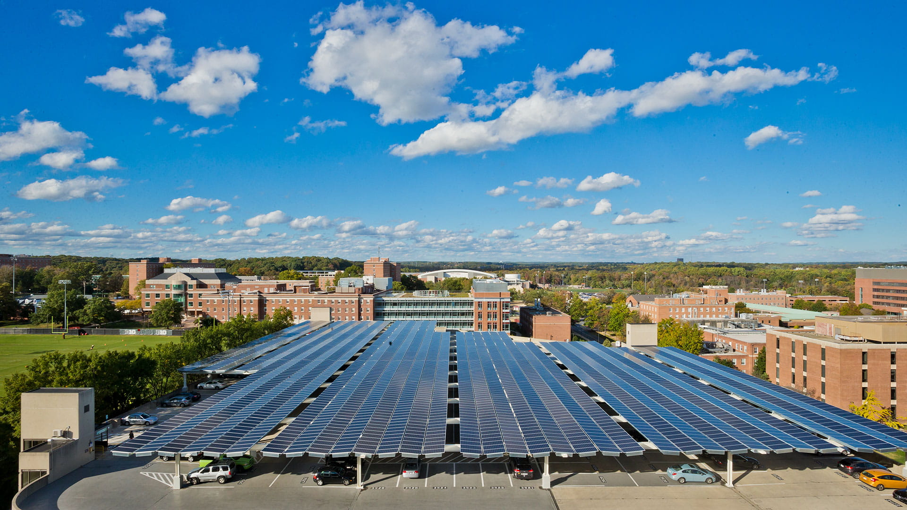

With sustainability on the rise, how does the University of Maryland prioritize limiting its environmental impact?
At first glance, the University of Maryland is an exemplary institution in fighting climate change.
It’s been awarded a Gold ranking for it’s sustainable practices by the Association for the Advancement of Sustainability in Higher Education.
It’s ranked in the top 40 “Cool Schools” by Sierra Magazine, for performance in sustainable action, and second among the Big 10.
Students, however, often ask themselves: is our school really doing enough to preserve our future on this planet?
For many student activists, the answer is no. In fact, groups for climate action are getting together to demand more intensive climate action.
The Office of Sustainability’s progress since 2005 speaks for itself.
Waste breakdown
The university diverts more than 80% of the waste it produces by way of composting, recycling, or repurposing.

Photo from the Office of Sustainability
10,000 solar panels produce over 3 megawatts of energy for the campus.
But one initiative in particular isn’t up to par with student activists in the SCoop: carbon neutrality.
The Climate Action Plan (CAP) by the Office of Sustainability projects the following achievements, based on the 2005 baseline:
- 50% reduction in greenhouse gas emissions by 2020
- 60% reduction in greenhouse gas emissions by 2025
- Carbon neutral by 2050
Learn more by following the timeline below.
The SCoop believes it is the university’s responsibility to lead the world on a transition to carbon neutrality,
given the critical situation.
“Many local areas do not have the resources available to figure out their transition, so we have an especially important obligation to create models that others can replicate,” said Michael Brennan, a public policy master’s student.
The University of Maryland chapter of MaryPIRG, a statewide, student directed and funded non-profit and non-partisan organization, is a strong advocate for this policy.
MaryPIRG believes the university must push up it’s carbon offsetting goals so it can prioritize more effective energy systems from an earlier date.
It hopes the university focuses more on being fossil free, by setting a goal like 2050 to get off offsets and use alternatives like biogas or geothermal energy.
“The divestment demand is also important because students have little accessibility to university investments,” said Sonja Neve, president of MaryPIRG and senior environmental science and policy major. “The first step is having more transparency so we know what our university is really investing in.”
Studying Sustainability
The University of Maryland’s sustainability minor is the most popular on campus, with 413 students enrolled from nearly every major.
Sustainability minor, by major
“Sustainability affects all majors regardless of interest in it or not,” said Marie Panday, sustainability advisor and sophomore environmental science and policy major.
Studying sustainability, although popular, is currently voluntary. Many students feel it should be mandatory. The SCoop feels that students who don’t study sustainability miss out on important lessons that prepare them for the future of our environment.
“Today, we are faced with the option of either changing virtually every aspect of our society to be mindful of environment impact, or almost definitely face societal and economic collapse,” said Cole Garvin, sophomore architecture major and sustainability minor.
“It is like investing in life insurance before entering a war zone, I guess.”
Neve says she has taken many classes that could count towards this requirement: Introduction to Environmental Policy, Weather and Climate, and Sustainability.
ENSP102
Environmental Policy
Emphasis on the process of formulating and evaluating policy responses to environmental problems, with attention to policy controversies related to scientific uncertainty, risk assessment, the valuation of nature, and distributional equity.
AOSC200
Weather and Climate
Origin and structure of the atmosphere, meteorological observations, weather maps, forecasting, satellites, energetics, wind, general circulation, storms, severe weather, climate change, air pollution.
AGNR301
Sustainability
How should we understand sustainability? How might we achieve it? How would we know if we had achieved it? And how could sustainability activists
of a rising generation lead by example?
“The main problem we are hearing from the administration is that to create this gen-ed, there must be a certain number of seats open across all classes so that incoming freshman would be able to get into them,” Neve explained. “But, with existing lists of classes that function as
sustainability electives it doesn't seem like it would be difficult to audit.”
What's next?
On top of the SCoop’s concerns, students feel there must more intent to include climate action into the university’s daily operations. When it failed to excuse absences for the Climate Strike, but cancelled
classes for the Penn State football game a week later, Brennan felt the university’s priorities were not in the right place.
“[The university] should publicly announce all student absences for the climate strikes are excused and no penalties are allowed, demonstrating [it] understands how urgent the climate crisis is,” Brennan said.
Widespread change, however, doesn’t happen overnight. Thankfully, students can turn to the SustainableUMD website for more resources on how to get involved on campus, as suggested by Sustainability Associate Emily Hightower.
Click
here to see how students can prioritize sustainability in campus life
Despite criticism, the university’s many recognitions make students like Panday hopeful for the future of the school and its dedication to the environment.

Panday and Garvin at the Climate Strike in Washington D.C. Images courtesy of Panday.
“[The University of Maryland] is at the forefront of all other universities in combatting climate change and I couldn’t be more proud,” she said.